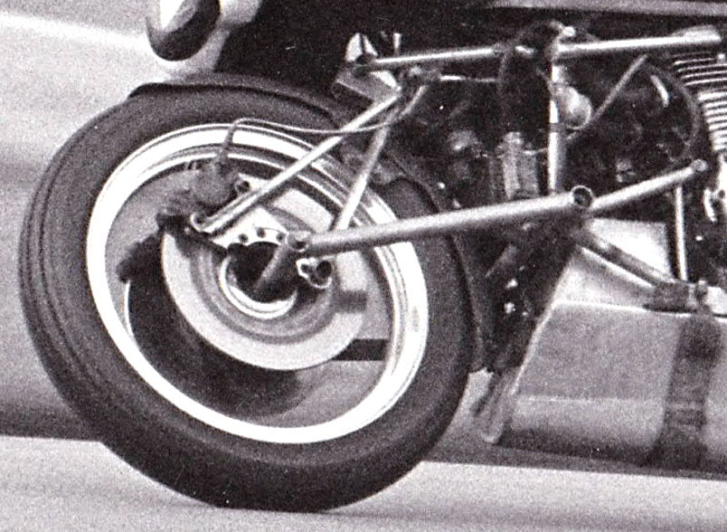

Ducati 750 (1975)
One of only two complete Difazio motorcycles, built around a rare electric-start Ducati roundcase engine. A Stafford Show engineering prize winner.
25 Catherine Street, Frome · Since 1914
A family motorcycle shop in Somerset — and the man who rethought how a motorcycle steers.
Founders & origins
Pascal Difazio travelled from central Italy to England, much of the way on foot. In 1914 he opened a shop at 25 Catherine Street, Frome, selling and repairing bicycles. His son John was born the same year.
The shop soon moved into motorcycles, delivered by train from the Midlands factories. John — known as “Jack” from his racing days — made his name on grass tracks aboard a BSA and later a Rudge Ulster.
In 1947, with Pascal ready to retire, Jack came home from a job in London to take over the family business. He was in his early thirties.
The big idea
Conventional telescopic forks steer, suspend and brake all at once — so they flex and dive. Jack’s hub-centre design separates those jobs: a swinging arm handles suspension, and the wheel pivots on a king-pin inside its own hub.
The University of Manchester took a Difazio on a 500-mile test and called it “the best overall machine currently available for high speed touring”. Jack patented the solo design in 1968 (GB1274441).
Timeline
Notable machines
One of only two complete Difazio motorcycles, built around a rare electric-start Ducati roundcase engine. A Stafford Show engineering prize winner.
Built from a written-off GT550K in 1973 and featured in Bike magazine in 1974.
The only Rocket 3 in a hub-steerer — owned by local man Kevin Charles since 1975.
The first hub-steered road bike, seen whistling through Frome in autumn 1969.
Mead & Tomkinson’s endurance racers used Difazio hub-centre steering; a recreation was later built in Frome by John Ransome.
One of only two Gold Wings converted, it has covered well over 100,000 miles.
Did you know?
Gallery

Legacy
In 2012, Kevin Charles’s restored 1976 Triumph Hurricane-engined Difazio — one of three built that spring — won the Kay Engineering Trophy for engineering excellence at the Stafford Classic Bike Show, presented by former BSA works racer John Cooper.
Jack Difazio died in 2012. Hub-centre steering later appeared on the Bimota Tesi and Yamaha GTS1000, and the shop went on to become one of the UK’s leading independent BMW specialists under his son Richard.
Draft site · photos marked “placeholder” await family images.